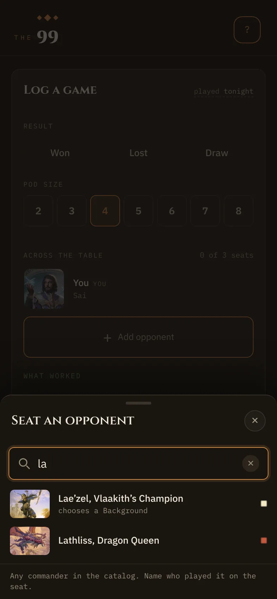
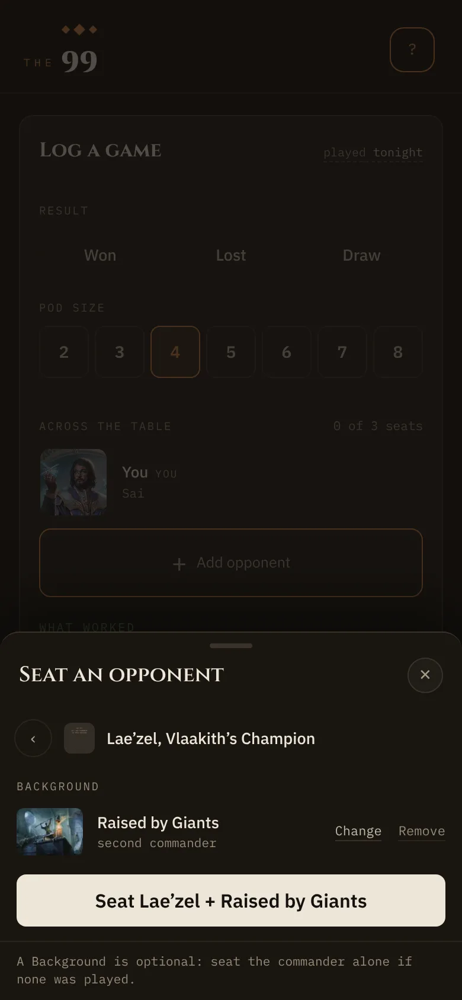

Opponent picker: a Background as the second commander · addendum
When you log a game, an opponent can now be seated with a commander that chooses a Background and that Background. The save already accepts the pair (#3164). This draws the picker's second slot, using the deck's Background pattern (search, a result row, the chosen slot, Remove), then how the pair reads on the form's seat, the History row and the life tracker. Every frame is the shipped UI rendered in a browser with this addendum's change patched in (scratch-gen/proposal.diff). Fixtures: you play Sai; Peter is on Lae’zel with Raised by Giants; Max on Bruse Tarl + Ishai (partners) for comparison.
Art. Lae’zel’s art is from the card image Hugh supplied (R1.1). Raised by Giants and Noble Heritage are crops from the approved partner add board V1, so they are soft when drawn large.
1 · Only a commander that chooses a Background opens the slot
- In the picker's results, that commander's row gets a second line, chooses a Background, so you know why its press doesn't seat at once. Every other row still seats on one press, as shipped.
- Partners keep today's paths (a friend's deck or a Rule 0 table). Decided: only Choose a Background gets the slot.
2 · The Background step: search and a result row
- The head is the friend-decks head: ‹ back to commanders, the commander's art and name.
- The slot starts as the picker's own field, Search Backgrounds, under the deck's rule line: Lae’zel can choose a Background as a second commander.
- Typing lists Backgrounds as the shipped commander rows (art, name, pips). None: No Background by that name.
3 · The chosen state and the remove action
- A BACKGROUND eyebrow over the chosen row, captioned second commander, with Change · Remove: the create picker's second slot, its words and text buttons.
- Change brings back the search; Remove empties the slot.
4 · One Seat press
- Under the slot, one primary press names what it seats: Seat Lae’zel or Seat Lae’zel + Raised by Giants. The Background is optional, and the foot says so.
- A seat holding a commander that chooses a Background reopens on this step, so a Background can be added, changed or removed later.
5 · The seat in the form
- The art splits in halves with a 2px seam, as the tracker's panel draws a partner pair.
- The name is the two-name treatment the History row and Matchups already use: Lae’zel + Raised by Giants. At 124px on desktop it takes two lines rather than cutting the Background off. A labelled or friend seat keeps its name and puts the pair under it.
6 · The History row
- No change: the vs line already reads Peter · Lae’zel + Raised by Giants, its face the commander's art, as it does for partners.
7 · The life tracker seat
- The panel splits its art, as it does for partners (shipped F14).
- Commander damage: a Background is no creature and deals no commander damage, so its seat's card is the commander alone with one stepper (tablet and phone).
- Tax keeps both rows: a Background is cast from the command zone, so it pays tax.
· · Phone and desktop
- One body for both, as shipped: the sheet at 390, the anchored 340px panel at 1300. No new control types: field, row, text buttons, primary button, all shipped.

1 · Search
Lae’zel's row says it chooses a Background.

2 · Background step
The slot is a search with the deck's rule line.

3 · Chosen
Change · Remove, and the Seat press names the pair.

4 · Seated
Split art, both names.